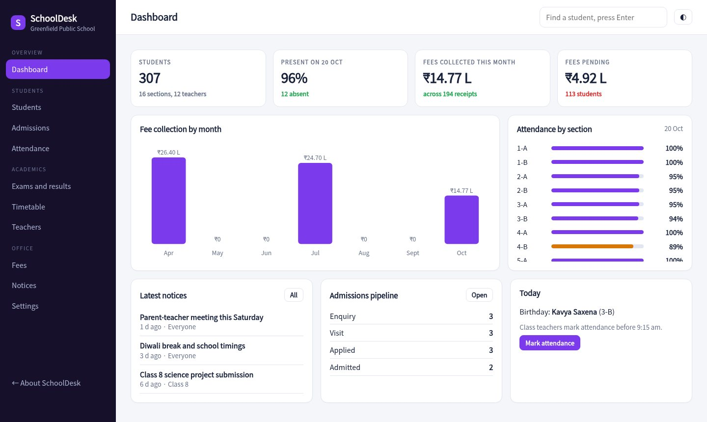
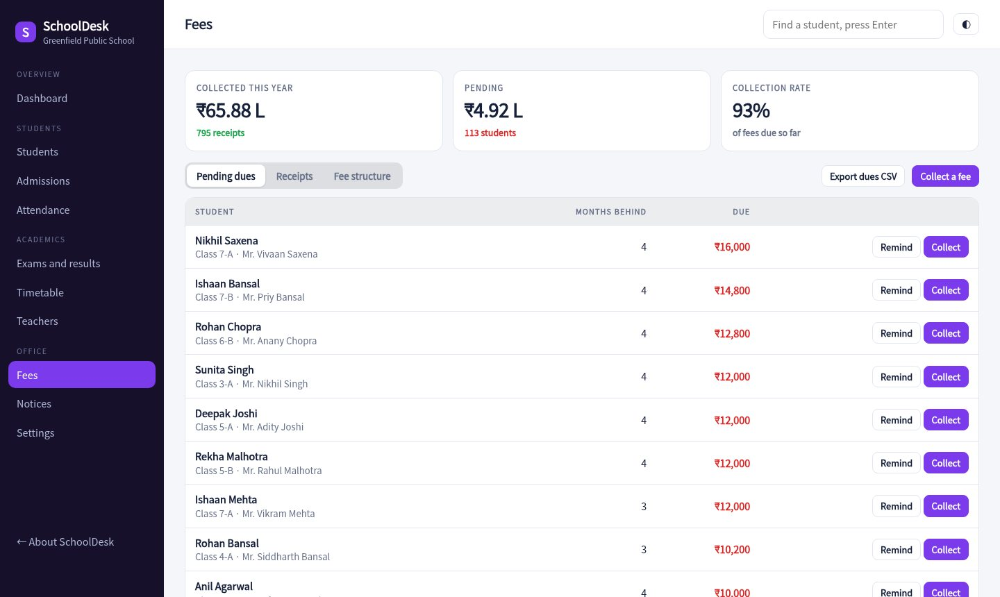
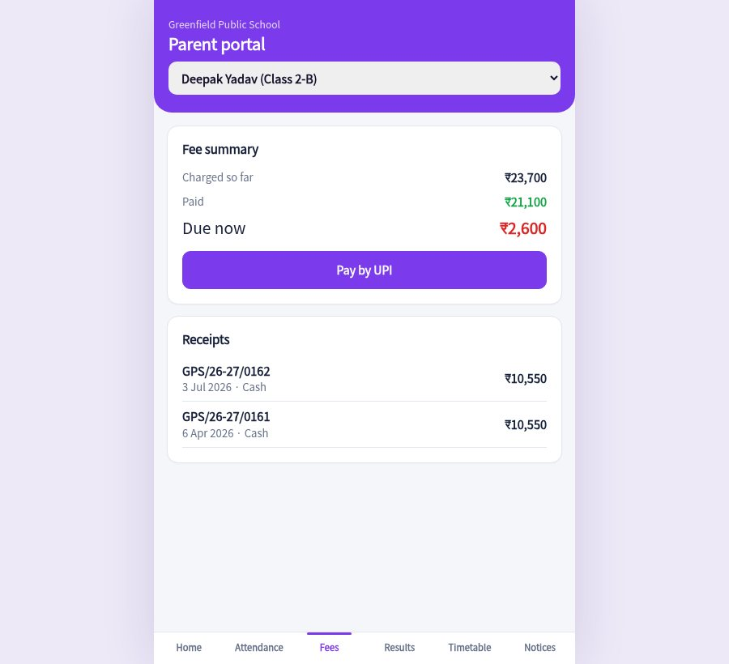

Admissions, daily attendance, fee receipts, marks and report cards, plus a parent portal that answers most of the calls your front office gets.

Enquiries from the website and walk-ins move from enquiry to visit to applied to admitted. One click turns an applied family into a student record.
Class teachers mark absentees on one screen. Parents of absent children get a WhatsApp message ready to send.
Monthly tuition, bus and annual charges by class. Collect, print a numbered receipt with the amount in words, and see who is behind.
Enter marks by section. Ranks, grades and class averages are worked out, and each report card prints cleanly.
A weekly grid for every section with the teacher shown under each subject. Change a period in two clicks.
Parents check attendance, pay fees by UPI, read notices and see results from their phone.
Attendance by section, this month's collections, pending fees and the admissions pipeline.
Every receipt is numbered and printable. Overdue families are sorted by how much they owe, with a reminder that carries a UPI link.

Parents choose a child and see attendance, dues, results, today's timetable and notices. Paying fees is a UPI scan.

Add admissions one by one, or paste a list. Set class fees and bus zones once.
Mark attendance in the morning, collect fees at the counter, enter marks after exams.
Share the link. Parents see only their own child's information.
Sample pricing for this concept build.
No. In production each parent logs in with their own mobile number and sees only their children. The demo lets you switch children to show the views.
Yes. Report cards and fee receipts print from the browser with the school name, grades, rank and a remark.
Fees are set per class, with bus zones and a sibling discount. A production build would add heads such as exam or activity fees.
No. The students, parents and marks are generated for a made-up school.
Mark attendance, collect a fee, print a report card, then open the parent view.
Open the console